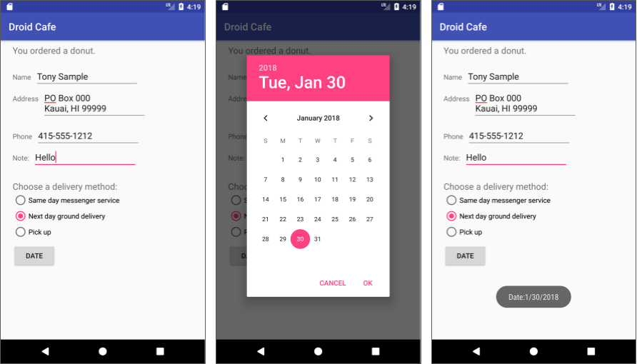

この実践的なコードラボは、Android Developer Fundamentals (Version 2) コースのUnit 2: User experience の一部です。コードラボを順番に学習していくことで、このコースを最大限に活用することができます。
注：このコースでは、"codelab"と"practical"という用語を入れ替えて使用しています。
序章
アプリバー（アクションバーとも呼ばれる）は、各アクティビティ画面の上部にある専用スペースです。基本アクティビティのテンプレートからアクティビティを作成すると、Android Studioにはアプリバーが含まれています。
アプリバーのオプションメニューは、通常、アプリ内の別のアクティビティへのナビゲーションなど、ナビゲーションのための選択肢を提供します。メニューはまた、設定やプロファイル情報を変更する方法など、アプリ自体の使用に影響を与える選択肢を提供する場合もありますが、これは通常は別のアクティビティで行われます。
この実習では、下図のようにアプリ内のアプリバーとオプションメニューの設定について学びます。
上の図では
オプションメニューの項目は、オプションのオーバーフローメニューに表示されます（上図参照）。しかし、いくつかの項目をアイコンとしてアプリバーに配置することができます。オプションメニューにアプリバーを使用することで、他のAndroidアプリとの一貫性を持たせることができ、ユーザーはアプリの操作方法を素早く理解し、素晴らしい体験をすることができます。
ヒント: 使い慣れた一貫したユーザーエクスペリエンスを提供するには、メニュー API を使用してユーザーアクションやその他のオプションをアクティビティに表示します。詳細は「メニュー」を参照してください。
また、ユーザーの選択を要求するダイアログを表示するアプリを作成して、ユーザーに OK や Cancel をタップするように要求するアラートなどを表示することもできます。ダイアログとは、ディスプレイの上部に表示されたり、ディスプレイを埋め尽くしたりして、アクティビティの流れを中断するウィンドウのことです。Androidには、時間や日付を選択するためのピッカーと呼ばれる、すぐに使えるダイアログが用意されています。これらのダイアログを使用して、ユーザーが正しくフォーマットされ、ユーザーのローカルの時刻と日付に合わせて調整された有効な時刻や日付を選択できるようにすることができます。このレッスンでは、日付ピッカーを使用したアプリも作成します。
すでに知っておくべきこと
できるようになるはずです。
あなたが学ぶこと
あなたがすること
前回の実習では、Basic Activityのテンプレートを使って下の図のようなDroid Cafeというアプリを作成しました。このテンプレートでは、画面上部のアプリバーにスケルトンのオプションメニューも用意されています。
この演習では、v7 appcompat サポート ライブラリのツールバーをアプリ バーとして使用します。このツールバーは、最も幅広いデバイスで動作し、アプリの開発に合わせて後からアプリ バーをカスタマイズすることができます。アプリ バーを使用するためのデザイン上の考慮事項の詳細については、マテリアル デザイン仕様のレスポンシブ レイアウト グリッドを参照してください。
アラートダイアログを表示する新しいアプリを作成します。ダイアログはユーザーのワークフローを中断し、ユーザーに選択を要求します。
また、日付ピッカーを表示するButtonを提供し、選択した日付を文字列に変換してToastメッセージに表示するアプリを作成します。
このタスクでは、前回の実践からDroidCafeInputプロジェクトを開き、画面上部のアプリバーのオプションメニューにメニュー項目を追加します。
1.1 コードを調べる
DroidCafeInputアプリを入力コントロールの使用法の実習から開き、res > layoutフォルダ内の以下のレイアウトファイルを調べます。
MainActivityのメインレイアウト、ユーザーが最初に見る画面。MainActivity画面の内容のためのレイアウトで、(すぐにわかるように) activity_main.xml内に含まれています。OrderActivityのレイアウトです。以下の手順に従ってください。
ConstraintLayout の app:layout_behavior は @string/appbar_scrolling_view_behavior に設定されており、上部のアプリ・バーに関連して画面がどのようにスクロールするかを制御します。 (この文字列リソースは values.xml という生成されたファイルで定義されており、編集してはいけません)。スクロール動作の詳細については、Android Developers Blog のAndroid Design Support Library を参照してください。スクロール メニューを含むデザイン プラクティスについては、マテリアル デザイン仕様の「スクロール」を参照してください。
CoordinatorLayoutとAppBarLayoutタグには、android.support.design（Android Design Support Library）を指定する完全修飾名が必要です。AppBarLayoutは、垂直LinearLayoutのようなものです。これは、ネイティブのActionBarの代わりにサポートライブラリのToolbarクラスを使用して、アプリバーを実装します。このレイアウト内のToolbarはid toolbarを持ち、AppBarLayoutと同様に完全修飾名(android.support.v7.widget)で指定されています。
アプリバーは、ディスプレイの上部にあるセクションで、アクティビティのタイトルやナビゲーション、その他のインタラクティブな項目を表示することができます。ネイティブの ActionBar は、デバイスで実行されている Android のバージョンによって挙動が異なります。このため、オプションメニューを追加する場合は、v7 appcompat サポートライブラリのツールバーをアプリバーとして使用する必要があります。ツールバーを使用すると、最も幅広いデバイスで動作するアプリバーを簡単に設定でき、また、アプリの開発に合わせて後からアプリバーをカスタマイズする余地ができます。ツールバーには最新の機能が含まれており、サポートライブラリを使用できるすべてのデバイスで動作します。
activity_main.xmlレイアウトはまた、content_main.xmlで定義されたレイアウト全体を含めるためにinclude layout文を使用しています。このようにレイアウト定義を分離することで、レイアウトのツールバー定義とコーディネーターレイアウトから離れてレイアウトの内容を簡単に変更することができます。これは、レイアウトのフォーマットからコンテンツ（翻訳が必要な場合があります）を分離するためのベストプラクティスです。
.MainActivityアクティビティは、NoActionBarテーマを使用するように設定されています。このテーマは、styles.xmlファイルで定義されています（それを見るには、アプリ > res >values > styles.xmlを開きます）。スタイルは別のレッスンでカバーされていますが、NoActionBarテーマはwindowActionBar属性をfalse（ウィンドウアプリバーなし）に設定し、windowNoTitle属性をtrue（タイトルなし）に設定していることがわかります。これらの値が設定されているのは、アクションバーを使用するのではなく、AppBarLayoutでアプリバーを定義しているからです。NoActionBar テーマの 1 つを使用すると、アプリがネイティブの ActionBar クラスを使用してアプリ バーを提供することができなくなります。AppCompatActivityを継承し、onCreate()メソッドで始まり、コンテンツビューをactivity_main.xmlレイアウトに設定し、ツールバーをレイアウトで定義されたツールバーに設定します。その後、setSupportActionBar()を呼び出してツールバーを渡し、ツールバーをアクティビティのアプリバーとして設定します。アプリへのアプリ バーの追加に関するベストプラクティスについては、「アプリ バーの追加」を参照してください。
1.2 オプションメニューにメニュー項目を追加する
オプションメニューに以下のメニュー項目を追加します。
OrderActivityに移動します。Android は、メニュー項目を定義するための標準的な XML フォーマットを提供しています。Activity コードでメニューを作成する代わりに、メニューとそのすべてのメニュー項目を XML メニューリソースで定義することができます。そして、アクティビティの中でメニューリソースを膨らませることができます (メニューオブジェクトとして読み込む)。
action_settings（設定の選択肢）のみで、以下のように定義されています。<項目
android:id="@+id/action_settings"
="100"
android:title="@string/action_settings"
="never" />
settings項目の以下の属性を変更して、action_contact項目にします（既存のandroid:orderInCategory属性は変更しないでください）。属性 | 値 |
アンドロイド |
|
アンドロイド |
|
|
|
action_contactにハードコードされた文字列「Contact」を抽出します。属性 | 値 |
アンドロイド |
|
|
|
アンドロイド |
|
|
|
android:orderInCategory属性は、メニュー項目がメニューに表示される順番を指定します。Contactの項目は100に設定されていますが、これは、上部ではなく下部に表示されるように指定するための大きな数字です。オーダーの項目を10に設定すると、コンタクトよりも上に表示され、メニューには他の項目のための十分なスペースが残されます。
action_orderにハードコードされた文字列"Order"を抽出します。ステータス項目属性 | 値 |
アンドロイド |
|
|
|
アンドロイド |
|
|
|
お気に入りのアイテム属性 | 値 |
アンドロイド |
|
|
|
アンドロイド |
|
|
|
リソースaction_statusに"Status"を、リソースaction_favoritesに"Favorites"を抽出します。を開き、onOptionsItemSelected()メソッドのif文を変更して、id action_settingsを新しいid action_orderに置き換えます。if (id == R.id.action_order)
アプリを起動し、下の図の左側に表示されているアクションオーバーフローのアイコンをタップすると、下の図の右側に表示されているオプションメニューが表示されます。このメニューから選択した項目に反応するコールバックをすぐに追加します。
上の図では
オプションメニューの項目の順序に注目してください。android:orderInCategory属性を使って、メニュー内のメニュー項目の優先順位を指定しました。Order項目は10で、Status(20)とFavorites(30)の後に続き、Contactは最後(100)になります。以下の表は、メニュー内の項目の優先度を示しています。
メニュー項目 | オーダーインカテゴリー属性 |
注文 |
|
ステータス |
|
お気に入り |
|
連絡先 |
|
可能な限り、ユーザーが最初にオーバーフローアイコンをクリックしなくてもクリックできるように、最も頻繁に使用されるアクションをアプリバーにアイコンで表示したいと思います。このタスクでは、メニュー項目の一部にアイコンを追加し、画面上部にあるアプリバーのメニュー項目の一部をアイコンとして表示します。
この例では、オーダーとステータスアクションが最も頻繁に使用されると仮定します。お気に入り」アクションは時々使用され、「連絡先」は最も頻繁に使用されないアクションです。これらのアクションにアイコンを設定し、以下のように指定します。
2.1 メニュー項目のアイコンを追加する
アクションのアイコンを指定するには、クリック可能な画像を使用する実習で使用したのと同じ手順で、アイコンを画像アセットとして描画可能なフォルダに追加する必要があります。以下のようなアイコン（またはそれに近いもの）を使用したいと思います。
ステータスとお気に入りのアイコンについては、次の手順に従います。
ヒント: 詳細については、「Image Asset Studioでアプリのアイコンを作成する」を参照してください。
2.2 アプリバーにメニュー項目をアイコンとして表示する
メニュー項目をアイコンとしてアプリ・バーに表示するには、menu_main.xml の app:showAsAction 属性を使用します。属性の次の値は、アクションをアイコンとしてアプリ・バーに表示するかどうかを指定します。
"常に"とは常にアプリバーに表示されます。(十分なスペースがない場合、他のメニューアイコンと重なることがあります)"ifRoom"です。部屋がある場合、アプリバーに表示されます。"never"。アプリバーには表示されず、そのテキストはオーバーフローメニューに表示されます。メニュー項目の一部をアイコンとして表示するには、以下の手順に従います。
注文項目属性 | 古い価値 | 新しい値 |
アンドロイド | 一人もいない |
|
|
|
|
ステータス項目属性 | 古い価値 | 新しい値 |
アンドロイド | 一人もいない |
|
|
|
|
お気に入りのアイテム属性 | 古い価値 | 新しい値 |
アンドロイド | 一人もいない |
|
|
|
|
アプリバーに収まるアクションボタンの数は？向きや画面の大きさによって異なります。上図の左側のように縦長の場合は、上図の右側のように横長の場合に比べて、ボタンの数が少なくなります。アクションボタンがメインアプリバーの幅の半分以上を占めない場合があります。
このタスクでは、どのメニュー項目がタップされたかについてのメッセージを表示するメソッドを追加し、どのメニュー項目がタップされたかを判断するためにonOptionsItemSelected``() メソッドを使用します。
3.1 メニューの選択肢を表示するメソッドを作成する
public void displayToast(String message) { {.
Toast.makeText(getApplicationContext(), message.
Toast.LENGTH_SHORT).show()。
}
3.2 onOptionsItemSelected イベントハンドラを使用する
onOptionsItemSelected() メソッドは、オプション・メニューからの選択を処理します。どのメニュー項目が選択されたか、どのようなアクションを取るべきかを判断するために、スイッチケースブロックを追加します。
onOptionsItemSelected() メソッドを見つけます。このメソッドは、メニュー項目のIDを使用して、特定のメニュー項目がクリックされたかどうかを判断します。以下の例では、id は action_order です。オーバーライド
public boolean onOptionsItemSelected(MenuItem item) { { { {.
int id = item.getItemId()。
if (id == R.id.action_order) { (id == R.id.action_order)
返します。
}
return super.onOptionsItemSelected(item)。
}
int id 代入文と if 文を、メニュー項目の id に基づいて適切なメッセージを設定する以下のスイッチケースブロックで置き換えてください。オーバーライド
public boolean onOptionsItemSelected(MenuItem item) { { { {.
switch (item.getItemId() {)
case R.id.action_order.
displayToast(getString(R. string.action_order_message))を表示します。
返します。
case R.id.action_status.
displayToast(getString(R. string.action_status_message))。
返します。
case R.id.action_favorites.
displayToast(getString(R. string.action_favorites_message))。
返します。
case R.id.action_contact.
displayToast(getString(R. string.action_contact_message))を表示します。
返します。
は
// 何もしないで
}
return super.onOptionsItemSelected(item)。
}
Toastメッセージが表示されるはずです。上の図では
3.3 メニュー項目からアクティビティを開始する
通常は、メニュー項目ごとにアクションを実装します。前回のタスクのスニペットを参考に、action_orderの場合のコードを以下のように変更して、OrderActivityを起動します(クリッカブル画像を使うレッスンでフローティングアクションボタンに使ったのと同じコードを使います)。
switch (item.getItemId() {)
case R.id.action_order.
Intent intent = new Intent(MainActivity.this, OrderActivity.class).
intent.putExtra(EXTRA_MESSAGE, mOrderMessage)。
startActivity(intent)。
返します。
// ... 他のケースのためのコード
}
アプリを実行します。アプリバーのショッピングカートのアイコン（注文項目）をクリックすると、直接OrderActivityの画面に移動します。
タスク3のソリューションコード
Android Studioプロジェクト。DroidCafeOptions
注: コーディングの課題はすべて任意であり、後のレッスンの前提条件ではありません。
チャレンジ。コンテキストメニューを使用して、ユーザーが選択したビューに対してアクションを実行できるようにする。通常、アプリバーのオプションメニューには、別のアクティビティへのナビゲーションの選択肢がありますが、コンテキストメニューを使用して、ユーザーが現在のアクティビティ内でビューを変更できるようにします。
両方のメニューは XML で記述されており、両方ともMenuInflater を使用して膨らませ、両方とも "on item selected" メソッドを使用しています。そのため、2つのメニューを構築して使用するテクニックは似ています。
コンテキスト メニューは、下の図の左側に示すように、ユーザーがビュー上でタッチ＆ホールドを行うと、メニュー項目のフローティング リストとして表示されます。この課題では、3 つのオプションを表示するコンテキスト メニューをScrollingText アプリに追加します。下図に示すように、編集、共有、削除の 3 つのオプションを表示するためのコンテキスト メニューを ScrollingText アプリに追加します。メニューは、ユーザーがTextViewをタッチ＆ホールドすると表示されます。その後、アプリは、図の右側に示すように、選択されたメニューオプションを示すトーストメッセージを表示します。
ヒント
コンテキストメニューはオプションメニューと似ていますが、2つの決定的な違いがあります。
この課題を解決するには、以下の一般的な手順に従ってください。
resフォルダを右クリックし、新規作成 > Android Resource Directoryを選択します。リソースタイプのドロップダウンメニューでメニューを選択し、OKをクリックします。次に、新しいメニューフォルダを右クリックして、新規作成 > メニューリソースファイルを選択し、menu_contextという名前を入力して、OKをクリックします。menu_contextを開き、オプションメニューと同じようにメニュー項目を入力します。
registerForContextMenu()メソッドを使用して、ビューをコンテキストメニューに登録します。onCreate() メソッドで、TextView を登録します。
TextView article_text = findViewById(R.id.article).
記事の内容を変更するには、記事の内容を変更する必要があります。
onCreateContextMenu() メソッドを実装します。オーバーライド
public void onCreateContextMenu(ContextMenu menu, View v.
.ContextMenu.ContextMenu.ContextMenuInfoContextMenuInfo menuInfo){
super.onCreateContextMenu(menu, v, menuInfo)。
MenuInflater inflater = getMenuInflater().
inflater.inflate(R.menu.menu_context, menu)を使用しています。
}
onContextItemSelected()メソッドを実装します。この場合、単純にメニューの選択でトーストを表示します。オーバーライド
public boolean onContextItemSelected(MenuItem item) { { {.
switch (item.getItemId() {)
case R.id.context_edit.
displayToast("編集した選択肢がクリックされました。)
返します。
case R.id.context_share.
displayToast("共有する選択をクリックしました。)
返します。
case R.id.context_delete.
displayToast("クリックした選択肢を削除します。)
返します。
は
return super.onContextItemSelected(item)。
}
}
チャレンジソリューションコード
Android Studioプロジェクト。ContextMenuScrollingText
ユーザーの選択を要求するダイアログを提供することができます。例えば、ユーザーが OK または Cancel をタップすることを要求するアラートなどです。ダイアログとは、ディスプレイの上部に表示されたり、ディスプレイを埋め尽くしたりして、アクティビティの流れを中断させるウィンドウのことです。
例えば、警告ダイアログでは、ユーザーがそれを読んだ後に「続ける」をクリックすることを要求したり、正のボタン(OKやAcceptなど)をクリックして同意するか、負のボタン(Cancelなど)をクリックして同意しないかの選択をユーザーに与えたりすることができます。アラート用の標準ダイアログを表示するには Dialog クラスのAlertDialog サブクラスを使います。
ヒント: ダイアログの使用は控えめにしてください。デザインのベストプラクティスについては、ダイアログのマテリアルデザインガイドを参照してください。コード例については、Android 開発者向けドキュメントのダイアログを参照してください。
この実習では、標準的なアラートダイアログを起動するために Button を使用します。実際のアプリでは、何らかの条件に基づいて、またはユーザーが何かをタップしたことに基づいてアラートダイアログをトリガーすることがあります。
4.1 アラートダイアログを表示するための新規アプリを作成する
この演習では、OKボタンとキャンセルボタンを持つアラートを作成します。このアラートは、ユーザーがボタンをタップすることでトリガーされます。
TextView要素を編集してHello World!タップしてアラートをテストする："Hello World!"の代わりにandroid:onClick属性を追加して、クリックハンドラonClickShowAlert()を呼び出すようにします。入力した後、クリックハンドラはまだ作成されていないので赤で下線が引かれています。android:onClick="onClickShowAlert"
これで以下のようなレイアウトになりました。
4.2 メインアクティビティにアラートダイアログを追加する
ビルダー・デザイン・パターンを使用すると、多くの必須属性とオプション属性を持ち、ビルドに多くのパラメータを必要とするクラスからオブジェクトを簡単に作成することができます。このパターンがなければ、必須属性とオプション属性の組み合わせのコンストラクタを作成しなければなりません。ビルダーデザインパターンの詳細については、ビルダーパターンを参照してください。
ビルダークラスは通常、ビルドするクラスの静的メンバクラスです。AlertDialog.Builder を使用して、タイトルを設定するためのsetTitle()、メッセージを設定するためのsetMessage()、ボタンを設定するためのsetPositiveButton() およびsetNegativeButton() を使用して、標準のアラートダイアログを構築します。
アラートを作成するには、AlertDialog.Builderのオブジェクトを作成する必要があります。アラートボタンのクリックハンドラ onClickShowAlert() を追加します。つまり、ユーザーが Alert ボタンをクリックしたときにのみダイアログが作成されるということです。このコーディングパターンはアラートをテストするために Button を使用する場合には論理的ですが、他のアプリでは onCreate() メソッドでダイアログを作成し、他のコードが常にダイアログをトリガーできるようにしたいかもしれません。
を開き、onClickShowAlert() メソッドの先頭を追加します。public void onClickShowAlert(View view) { { {.
AlertDialog.Builder myAlertBuilder = new
AlertDialog.ビルダー(MainActivity.)
// ダイアログのタイトルとメッセージを設定します。
}
入力したままAlertDialog.Builderが認識されない場合は、赤い電球のアイコンをクリックして、サポートライブラリのバージョン(android.support.v7.app.AlertDialog)を選択してActivityにインポートします。
onClickShowAlert() に設定するコードを追加します。// ダイアログのタイトルとメッセージを設定します。
myAlertBuilder.setTitle("Alert")。
myAlertBuilder.setMessage("Click OK to continue, or Cancel to stop:")。
// ダイアログボタンを追加します。
上記の文字列を文字列リソースに展開して alert_title, alert_message とします。setPositiveButton() メソッドと setNegativeButton() メソッドを使用して、アラートに OK ボタンと Cancel ボタンを追加します。// ダイアログボタンを追加します。
myAlertBuilder.setPositiveButton("OK", new)
.OnClickListener() {
public void onClick(DialogInterface dialog, int which) {
// ユーザーがOKボタンをクリックしました。
Toast.makeText(getApplicationContext(), "Pressed OK".
Toast.LENGTH_SHORT).show()。
}
});
myAlertBuilder.setNegativeButton("Cancel", new
.OnClickListener() {
public void onClick(DialogInterface dialog, int which) {
// ユーザーはダイアログをキャンセルしました。
Toast.makeText(getApplicationContext(), "Pressed Cancel".
Toast.LENGTH_SHORT).show()。
}
});
// AlertDialogを作成して表示します。
ユーザーがアラートで OK または Cancel ボタンをタップした後、ユーザーの選択を取得してコードに使用することができます。この例では、トーストメッセージを表示しています。
ok_button と cancel_button として文字列リソースに抽出し、Toast メッセージの文字列を抽出します。onClickShowAlert() メソッドの最後に、警告ダイアログを作成して表示する show() を追加します。// AlertDialogを作成して表示します。
myAlertBuilder.show()。
下の図の左側に表示されているアラートボタンをタップすると、下図の中央に表示されているアラートダイアログが表示されます。ダイアログにはOKボタンとキャンセルボタンが表示され、下の図の右側のようにどちらを押したかを示すトーストメッセージが表示されます。
タスク4のソリューションコード
Android Studioプロジェクト。DialogForAlert
Android には、時刻や日付を選択するためのピッカーと呼ばれるダイアログが用意されています。これを使用することで、ユーザーが正しい時刻や日付を選択し、ユーザーのローカル時刻や日付に合わせて正しくフォーマットされていることを確認することができます。各ピッカーには、時間（時、分、午前/午後）または日付（月、日、年）の各部分を選択するためのコントロールが用意されています。ピッカーの設定については、ピッカーを参照してください。
このタスクでは、新しいプロジェクトを作成し、日付ピッカーを追加します。また、アクティビティ内の動作やUIの一部であるフラグメントの使用方法も学びます。これはメインアクティビティ内のミニアクティビティのようなもので、独自のライフサイクルを持ち、ピッカーを構築するために使用されます。すべての作業はあなたのために行われます。Fragment クラスについては、API ガイドのFragments を参照してください。
ピッカーにFragmentを使う利点の一つは、日付と時刻を異なる方法で表示する様々なロケールのために、日付と時刻を管理するためのコードセクションを分離できることです。ピッカーを表示するための最良の方法は、FragmentのサブクラスであるDialogFragmentのインスタンスを使用することです。DialogFragmentはアクティビティウィンドウの上に浮かんでいるダイアログウィンドウを表示します。この演習では、ピッカーダイアログにFragmentを追加し、ダイアログのライフサイクルを管理するためにDialogFragmentを使用します。
ヒント。ピッカーにフラグメントを使用するもう一つの利点は、携帯電話サイズのディスプレイでは基本的なダイアログを、大型ディスプレイではレイアウトの一部を埋め込むなど、異なるレイアウト構成を実装できることです。
5.1 日付ピッカーを表示するアプリを新規作成する
このタスクを開始するには、日付ピッカーを表示するボタンを提供するアプリを作成します。
TextView要素の"Hello World!"テキストをHello World!"に編集します。日付を選択します。Buttonにandroid:onClick属性を追加して、クリックハンドラshowDatePicker()を呼び出すようにします。入力後、クリックハンドラはまだ作成されていないので赤で下線が引かれています。android:onClick="showDatePicker"
これで以下のようなレイアウトになるはずです。
5.2 日付ピッカー用の新しいフラグメントの作成
このステップでは、日付ピッカーのフラグメントを追加します。
を開き、DatePickerFragment クラスの定義を編集して DialogFragment を拡張し、 DatePickerDialog.OnDateSetListener を実装して、リスナーを持つ標準の日付ピッカーを作成します。日付ピッカーのための DialogFragment の拡張については、ピッカー を参照してください。public class DatePickerFragment extends DialogFragment
実装しています。OnDateSetListener {
DialogFragmentとDatePickerDialog.OnDateSetListenerを入力すると、Android Studioは自動的にいくつかのインポート文を先頭のインポートブロックに追加します。
android.appをインポートします。DatePickerDialogをインポートします。
import android.support.v4.app.DialogFragmentをインポートします。
また、数秒後に左余白に赤い電球のアイコンが表示されます。
onDateSet() が選択されていて、@オーバーライドの挿入オプションが選択されています。OK をクリックして、空の onDateSet() メソッドを作成します。このメソッドは、ユーザーが日付を設定したときに呼び出されます。空のonDateSet()メソッドを追加した後、Android Studioは自動的に上部のインポートブロックに以下のように追加します。
import android.widget.DatePickerをインポートしています。
onDateSet() のパラメータは、int i、int i1、および int i2 である必要があります。これらのパラメータの名前を、より読みやすいものに変更してください。
public void onDateSet(DatePicker datePicker.
int year, int month, int day)
空の public DatePickerFragment() パブリック コンストラクタを削除します。onCreateView() メソッド全体を Dialog を返す onCreateDialog() に置き換え、onCreateDialog() に @NonNull を付けて、戻り値 Dialog が null にできないことを示します。Android Studio では、まだ何も返さないので、メソッドの横に赤い電球が表示されます。＠ＮｏｎＮｕｌｌ
オーバーライド
public Dialog onCreateDialog(Bundle savedInstanceState) {.
}
onCreateDialog()に以下のコードを追加して、Calendarから年、月、日を初期化し、ダイアログとこれらの値をアクティビティに返すようにします。Calendar.getInstance()を入力する際に、インポート先をjava.util.Calendar.// 現在の日付をピッカーのデフォルトの日付として使用します。
最終的なカレンダー c = Calendar.getInstance().
int year = c. get(Calendar.YEAR).
int month = c. get(Calendar.MONTH).
int day = c. get(Calendar.DAY_OF_MONTH).
// DatePickerDialogの新しいインスタンスを作成し、それを返します。
新しい DatePickerDialog(getActivity(), this, year, month, day) を返します。
5.4 メインアクティビティを変更する
MainActivity.javaのコードの多くは同じままですが、FragmentManagerのインスタンスを作成してFragmentを管理し、日付ピッカーを表示するメソッドを追加する必要があります。
日付ボタン用の showDatePickerDialog() ハンドラを追加します。これは、Fragment を自動的に管理し、ピッカーを表示するために getSupportFragmentManager() を使用して FragmentManager のインスタンスを作成します。Fragment クラスの詳細については Fragments を参照ください。public void showDatePicker(View view) { { {.
DialogFragment newFragment = new DatePickerFragment().
newFragment.show(getSupportFragmentManager(),"datePicker")。
}
datePicker」という文字列を抽出します。5.5 選択した日付を使用する
このステップでは、日付を MainActivity.java に戻し、日付を Toast メッセージで表示できる文字列に変換します。
を開き、年、月、日を引数に取る空の processDatePickerResult() メソッドを追加します。public void processDatePickerResult(int year, int month, int day) { {.
}
processDatePickerResult() メソッドに追加して、月、日、年を別々の文字列に変換し、3 つの文字列をスラッシュ記号で連結します。文字列 month_string = Integer.toString(month+1)。
文字列 day_string = Integer.toString(day)。
文字列 year_string = Integer.toString(year)。
文字列 dateMessage = (month_string +)
"/" + day_string + "/" + year_string)。
日付ピッカーが返す月の整数値は、1月は0からカウントを開始するので、1から始まる月を表示するには1を追加する必要があります。
Toast.makeText(this, "Date: " + dateMessage.
Toast.LENGTH_SHORT).show()。
"Date: " を date という名前の文字列リソースに抽出します。を開き、以下を onDateSet() メソッドに追加して、MainActivity で processDatePickerResult() を呼び出し、年、月、日を渡します。オーバーライド
public void onDateSet(DatePicker datePicker.
int year, int month, int day) {
MainActivity activity = (MainActivity) getActivity()。
activity.processDatePickerResult(year, month, day)。
}
getActivity()を使用します。これは、フラグメントで使用されると、そのフラグメントが現在関連付けられているアクティビティを返します。これが必要なのは、MainActivityのコンテキストがないとMainActivityのメソッドを呼び出すことができないからです（別のレッスンで学んだように、代わりにインテントを使用しなければなりません）。アクティビティはコンテキストを継承するので、メソッドを呼び出すためのコンテキストとして使用することができます(activity.processDatePickerResultのように)。
Toastメッセージに日付が表示されます。タスク5のソリューションコード
Android Studioプロジェクト。PickerForDate
注: コーディングの課題はすべて任意であり、後のレッスンの前提条件ではありません。
チャレンジしてください。日付ピッカーを追加するために学んだのと同じテクニックを使用して、時間ピッカーを実装した「Picker For Time」というアプリを作成します。
ヒント。
TimePickerDialog.OnTimeSetListenerを実装して、リスナー付きの標準タイムピッカーを作成します。onTimeSet() メソッドのパラメータを int i から int hourOfDay に、int i1 から int minute に変更します。最終的なカレンダー c = Calendar.getInstance().
int hour = c. get(Calendar.HOUR_OF_DAY).
int minute = c. get(Calendar.MINUTE)。
前のタスクの processDatePickerResult() と同様の processTimePickerResult() メソッドを作成して、時間要素を文字列に変換し、その結果を Toast メッセージに表示します。アプリを起動し、下図左側のように時刻ボタンをクリックします。図の中央のように時間ピッカーが表示されるはずです。時間を選択してOKをクリックします。画面下のToastメッセージに時間が表示されるはずです。
チャレンジ2のソリューションコード
Android Studioプロジェクト。PickerForTime
オプションメニューとアプリバーを提供します。
AppBarLayoutレイアウトが埋め込まれたCoordinatorLayoutレイアウトを設定します。AppBarLayoutは、垂直LinearLayoutのようなものです。ネイティブのActionBarではなく、サポートライブラリのToolbarクラスを使用して、アプリバーを実装しています。このテンプレートは、.MainActivity ActivityがNoActionBarテーマを使用するように設定されるように、AndroidManifest.xmlファイルを変更します。このテーマは、styles.xmlファイルで定義されています。MainActivity を AppCompatActivity を拡張するように設定し、onCreate() メソッドでコンテンツ ビューとツールバーを設定します。次にsetSupportActionBar() を呼び出してツールバーを渡し、ツールバーをアクティビティのアプリバーとして設定します。menu_main.xmlファイルでメニュー項目を定義します。android:orderInCategory属性は、メニュー項目がメニューに表示される順番を指定します。onOptionsItemSelected``() メソッドを使用して、どのメニュー項目がタップされたかを判断します。オプションメニュー項目のアイコンを追加します。
アプリバーにメニュー項目をアイコンとして表示します。
menu_main.xml内のapp:showAsAction属性を以下の値で使用します。"常に"とは常にアプリバーに表示されます。(十分なスペースがない場合、他のメニューアイコンと重なることがあります)"ifRoom"です。部屋がある場合、アプリバーに表示されます。"never"。アプリバーには表示されず、そのテキストはオーバーフローメニューに表示されます。アラートダイアログを使用します。
AlertDialogサブクラスを使用します。AlertDialog.Builder を使用して、タイトルを設定する setTitle()、メッセージを設定する setMessage()、ボタンを設定する setPositiveButton() および setNegativeButton() を使用して標準のアラートダイアログを構築します。ユーザー入力にはピッカーを使用します。
Fragment のサブクラスであるDialogFragment を使用します。DialogFragmentを作成し、DatePickerDialog.OnDateSetListenerを実装して、リスナーを持つ標準の日付ピッカーを作成します。このFragmentにonDateSet()をインクルードします。onCreateView() メソッドを、Dialog を返すonCreateDialog() に置き換えます。カレンダーから日付ピッカーの日付を初期化し、ダイアログとこれらの値をアクティビティに返します。FragmentManager のインスタンスを getSupportFragmentManager() を使用して作成し、Fragment を管理し、日付ピッカーを表示します。関連するコンセプトのドキュメントは4.3にあります。メニューとピッカーにあります。
Android Studio documentation:
Android developer documentation:
ToolbarAppBarLayoutonOptionsItemSelected``()ViewMenuInflaterregisterForContextMenu()onCreateContextMenu()onContextItemSelected()AlertDialogDialogFragmentFragmentManagerCalendarMaterial Design spec:
Other:
This section lists possible homework assignments for students who are working through this codelab as part of a course led by an instructor. It's up to the instructor to do the following:
Instructors can use these suggestions as little or as much as they want, and should feel free to assign any other homework they feel is appropriate.
If you're working through this codelab on your own, feel free to use these homework assignments to test your knowledge.
Open the DroidCafeOptions app that you created in this lesson.
Toast message.What is the name of the file in which you create options menu items? Choose one:
Which method is called when an options menu item is clicked? Choose one:
onOptionsItemSelected(MenuItem item)onClick(View view)onContextItemSelected()onClickShowAlert()Which of the following statements sets the title for an alert dialog? Choose one:
myAlertBuilder.setMessage("Alert");myAlertBuilder.setPositiveButton("Alert");myAlertBuilder.setTitle("Alert");AlertDialog.Builder myAlertBuilder = new AlertDialog.Builder("Alert");Where do you create a DialogFragment for a date picker? Choose one:
onCreate() method in the hosting Activity.onCreateContextMenu() method in Fragment.onCreateView() method in the extension of DialogFragment.onCreateDialog() method in the extension of DialogFragment.Check that the app has the following features:
DialogFragment.OrderActivity shows the date picker (refer to the center of the figure).Toast message in OrderActivity with the chosen date (refer to the right side of the figure).
To find the next practical codelab in the Android Developer Fundamentals (V2) course, see Codelabs for Android Developer Fundamentals (V2).
For an overview of the course, including links to the concept chapters, apps, and slides, see Android Developer Fundamentals (Version 2).